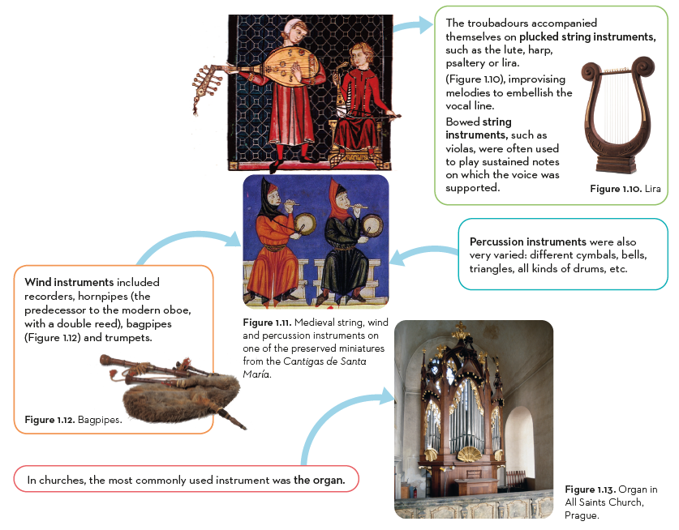

Skip to content
0. Analysis template
1. MIDDLE AGES (5th-15th centuries)
1.1. Monophonic religious music: Gregorian chant.
1.2. Monophonic secular music: troubadours and trouvères
1.3. Cantigas by Alfonso X el Sabio
1.4. The birth of polyphony
1.5. Instruments from the Middle Ages
1.6. Let’s have a recap!
MUSIC 3º ESO
History of Music
1.5. Instruments from the Middle Ages
Toggle content

Previous
Next
Made with eXeLearning
(New window)